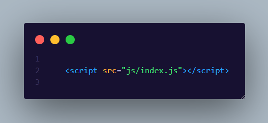

¿Que es Javascript?
JavaScript es un lenguaje de programación o de secuencias de comandos que te permite implementar funciones complejas en páginas web, cada vez que una página web hace algo más que sentarse allí y mostrar información estática para que la veas, muestra oportunas actualizaciones de contenido, mapas interactivos, animación de Gráficos 2D/3D, desplazamiento de máquinas reproductoras de vídeo, etc., puedes apostar que probablemente JavaScript está involucrado. Es la tercera capa del pastel de las tecnologías web estándar, dos de las cuales (HTML y CSS) hemos cubierto con mucho más detalle en otras partes del Área de aprendizaje.
¿Para que se utiliza JavaScript en el entorno web?
Anteriormente, las páginas web eran estáticas, similares a las páginas de un libro. Una página estática mostraba principalmente información en un diseño fijo y no todo aquello que esperamos de un sitio web moderno. JavaScript surgió como una tecnología del lado del navegador para hacer que las aplicaciones web fueran más dinámicas. Por medio de JavaScript, los navegadores eran capaces de responder a la interacción de los usuarios y cambiar la distribución del contenido en la página web.
A medida que el lenguaje evolucionó, los desarrolladores de JavaScript establecieron bibliotecas, marcos y prácticas de programación y comenzaron a utilizarlo fuera de los navegadores web. En la actualidad, puede utilizar JavaScript para el desarrollo tanto del lado del cliente como del lado del servidor.
¿Como puedo implementarlo en mi pagina web?
Existen diferentes maneras de incorporarlo en una pagina web, pero la mas comun es la siguiente:
De esta forma estaremos incorporando un archivo JavaScript de forma externa.